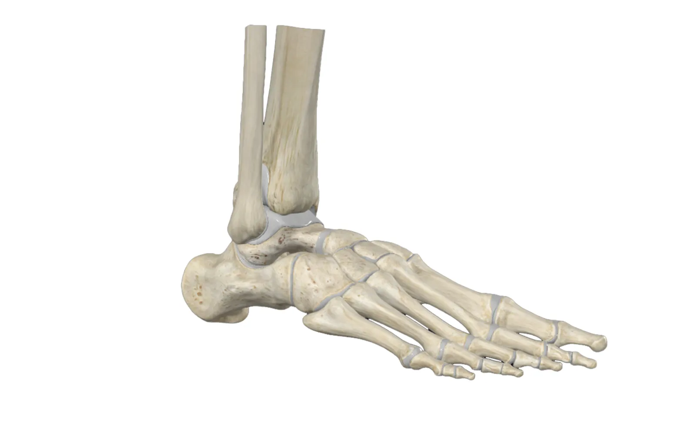

By
Ruth
Werner
Massage therapy is a core component for treating ankle sprains and is used with other treatments used by other providers, such as laser therapy, ultrasound, microcurrent, and electrical stimulation.